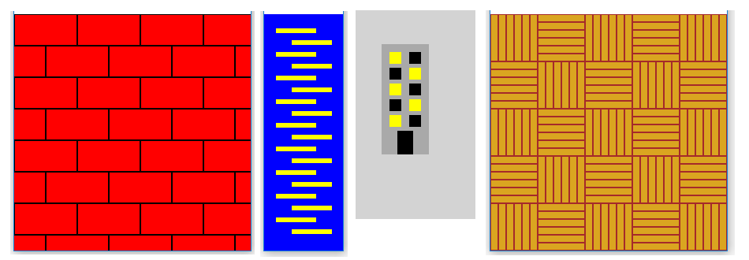

Правяне на по-сложни рисунки с помощта на цикли¶
Редовността, която искаме да използваме в чертежите, може да бъде по-сложна, сравнена с предишни проблеми. Ето няколко примера:
Във всички тези случаи все още съществува закономерност и може да се използва при писане на програми. Можем също да наблюдаваме, че всички примери на снимката имат нещо общо, което е, че две правила се появяват последователно. Например при тухлена рисунка първият ред от тухли започва с цялата тухла, вторият - с половин тухла, третият отново с цялата тухла и т.н. По същия начин осветените и тонирани прозорци се появяват последователно на чертежа на сградата.
Поради редуването на двете правила във всички чертежи, програмите, които ги рисуват, също ще имат някои прилики. Нека разгледаме примери за код.
Пример - цип¶
За да нарисуваме такъв цип, със сигурност ще нарисуваме линиите в контур. От чертежа се вижда, че всеки следващ ред е еднакъв брой пиксели по-нисък от предишния, така че не трябва да има проблем с изчисляването на y координатата. Ситуацията с x координатите е малко по-трудна, защото те се променят според малко по-сложно правило.
Можем да разрешим този проблем, като използваме оператора if в цикъла. След като нарисуваме една линия, проверяваме коя от двете възможни стойности \(x\) координата на началото на реда има. Ако тя има първата стойност - ние я присвояваме втората и обратно. Ето как изглежда в програмата:
Друга възможност за решаване на проблема с x координатите е да нарисувате две линии в един цикъл, например:
Пример - Тухли¶
Вече споменахме, че редовете от тухли последователно започват с цялата тухла и половината от тухлата. Ето защо при рисуването на тухли можем да използваме някоя от същите две идеи, както в предишния пример.
Нека дължината на тухлата се обозначава с \(a\), а височината й с \(h\). Получаваме цялата тухла в началото на реда, като изчертаваме правоъгълник на дадена височина, с \(x\) координата, равна на нула. Половината от тухла в началото на ред може да се получи, като се изчертае цяла тухла, изместена от \(a \ над 2\) вляво, тоест чрез начертаване на правоъгълник с: math:` x` координата, равна на -a // 2. Така се вижда само дясната половина на тухлата. Остава да се реши, когато нарисуваме изместена тухла и кога обикновена.
Едното решение е да съхранявате началото на реда от тухли в променлива, наречете го x_start. След изчертаване на всеки ред проверяваме дали променливата x_start има стойност нула или -a // 2. Както в предишния пример, независимо от двете стойности, които имаме, ние ще присвоим другата стойност на променливата, така че в следващия ред чертежът на тухлите ще започне различно.
Попълнете незавършени операции за настройка на променливата x_start
Втората идея е да изчертаем по две тухли на всеки проход през двойния контур: този, който нарисувахме в първото решение, и тухлата отдолу и наполовина от него. Забележете, че в този случай цикълът от y0 има два пъти стъпката, защото вътрешният цикъл извлича два реда тухли.
Попълнете незавършени изявления за рисуване на правоъгълници
Задачи за упражнение¶

{kind=link}
Задача-шахматна дъска
Начертайте шахматна дъска през целия прозорец (квадратчетата на дъската трябва да са 50х50 пиксела). Долният ляв квадрат трябва да е тъмен.
По-голямата част от програмата е написана, опитайте се да я завършите.
задача-сграда
Променете програмата по-долу, така че прозорците да бъдат нарисувани в двоен цикъл.
Частта, след промяната, може да започва така:
for y in range(5): # floor
for x in range(2): # side of the building (0 - left, 1 - right)
if (x+y) % 2 == 0:
color = ...
Ако не сте имали големи трудности с всички тези задачи, опитайте се да решите и една по-трудна.
Задача - предизвикателство: паркет
Напишете програма, която показва паркета (можете да видите снимката на паркета, когато щракнете върху бутона „Play Task“, а картината е същата като в началото на тази страница, вдясно). Целта, разбира се, е да нарисувате дъските на пода в множество контури. Размерите на дъската са 10х60, а цветовете са златист и кафяв.
Скелетът на програмата най-общо би могъл да изглежда така:
for row ...
for column ...
if ...
for floorboard in range(6):
pg.draw.rect(...)
else:
for floorboard in range(6):
pg.draw.rect(...)